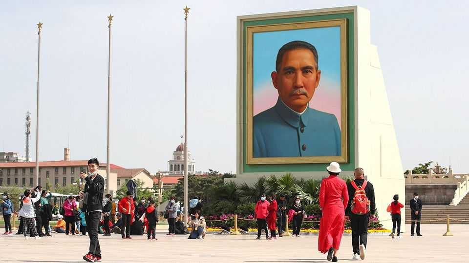

China and Taiwan are fighting over Sun Yat-sen
The 160th birthday of the nationalist revolutionary will be unusually fraught

Nov 5th 2026
On both sides of the Taiwan Strait, there are many roads, districts and schools named after the father of modern China: Sun Yat-sen, the country’s first president after a republican revolution in 1911. Ten years ago, when President Xi Jinping urged “all Chinese who revere Mr Sun Yat-sen” to unite, the fight over his legacy was not so fierce. Now, ahead of the 160th anniversary of his birth on November 12th, cross-strait relations are far more tense. Sun has become a political lightning rod.
Across China, the government has been whipping up Sun mania. Exhibitions, concerts and seminars praise Sun’s devotion to “revitalising” a poor and weak China. Mr Xi is expected to address a decennial Sun-themed pow-wow in Beijing. Of Sun’s “Three Principles of the People” (nationalism, democracy and welfare), Mr Xi stresses the first. He invokes Sun’s concept of national unity to promote his own aim of unifying Taiwan with the mainland. At the 150th anniversary of Sun’s birthday, Mr Xi vowed to “continue to fight for the revitalisation of China”.
Taiwanese officials are pushing back. This year they warned the island’s people not to attend China’s commemorations. In October the government’s Mainland Affairs Council said it would not allow serving or former officials to join the gathering in Beijing (in 2016 about 30 retired Taiwanese generals took part in the corresponding celebration of Sun’s birthday). “What are Taiwanese officials afraid of?” People’s Daily, the Chinese Communist Party’s main mouthpiece, asked in a recent column. They are “terrified” that more Taiwanese will realise their “future development lies in a strong motherland”, it fumed.
But there is another tension: inside Taiwan. The ruling Democratic Progressive Party is not nearly as pro-Sun as the opposition Kuomintang (KMT). Sun, after all, founded the KMT in 1912 (the party fled to Taiwan in 1949 after losing a civil war with the Communists). Earlier this year, China criticised Taiwan’s plan to remove politicians, including Sun, from banknotes as an attempt to “erase Chinese national identity”. There is sympathy for that view in the KMT. Much less so among young Taiwanese—while China’s calls for “national reunification” have been growing louder, many have been leaving Sun’s orbit.■
Subscribers can sign up to Drum Tower, our new weekly newsletter, to understand what the world makes of China—and what China makes of the world.